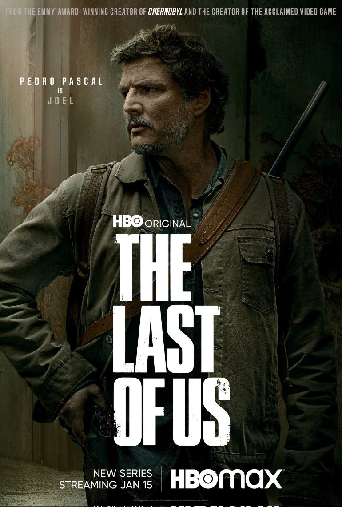

 Amerykański serial dramatyczny o tematyce postapokaliptycznej, stworzony przez Craiga Mazina i Neila Druckmanna dla HBO. Serial, bazujący na wydanej w 2013 roku grze komputerowej studia Naughty Dog pod tym samym tytułem, opowiada o Joelu – przemytniku podejmującym się eskortowania nastoletniej Ellie przez postapokaliptyczne Stany Zjednoczone. Serial został opublikowany 15 stycznia 2023 roku. Jak narazie opowiada on tylko o pierwszej części gry ale są pogłoski, że planowana jest już praca nad drugą częścią.